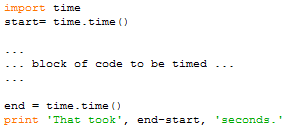
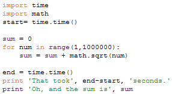

Once your code is working, and you have tested it to ensure it works correctly, you may need to try and make it faster. Making it faster implies being able to measure its speed. Just as you measure the speed of an athlete by timing them when they run a race we measure the speed of a program by timing how long it takes to execute. The simplest way to do this in Python is using a program structured like this,

The function time.time() returns the current time in seconds since the
epoch*. By grabbing the time before the computations begin in start and the
time when they are completed in end. and then finding their difference we can
calculate how long the computations took. Here is an example in which we see
how long it takes to find the sum of the square roots of the numbers from 1
to 1,000,000.

Truly accurate timing of program execution is much trickier than this technique suggests. Unless you get the help of the operating system the timing shown above will depend on what else happens to be running on your computer at the same time. More sophisticated timing is possible using programs called profilers that measure the time more accurately than our approach above.
* For more see the Python documentation on time.